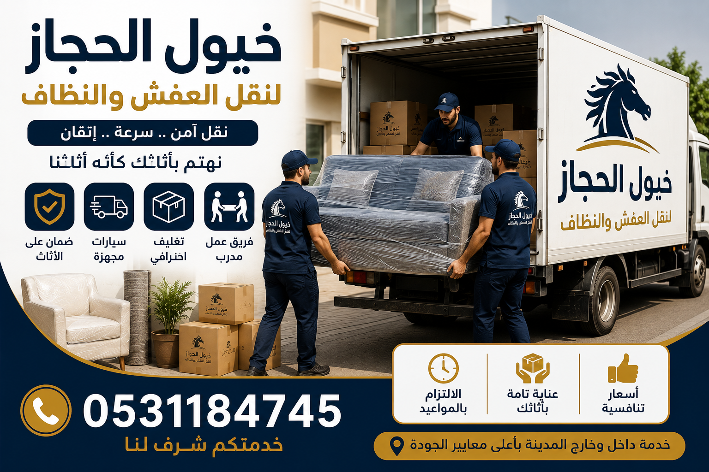
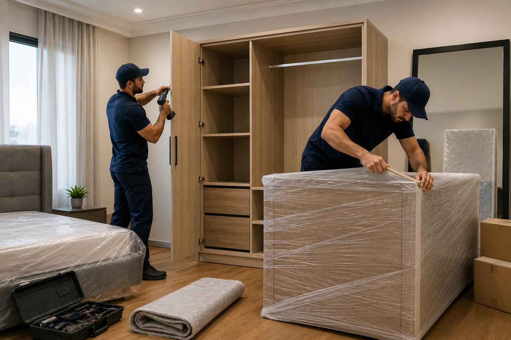
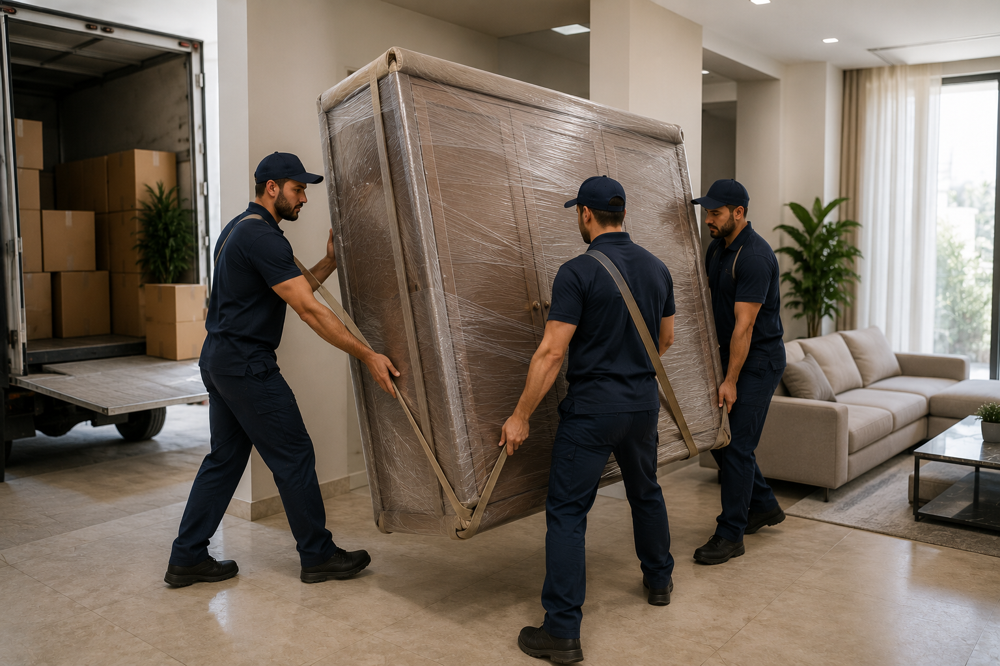
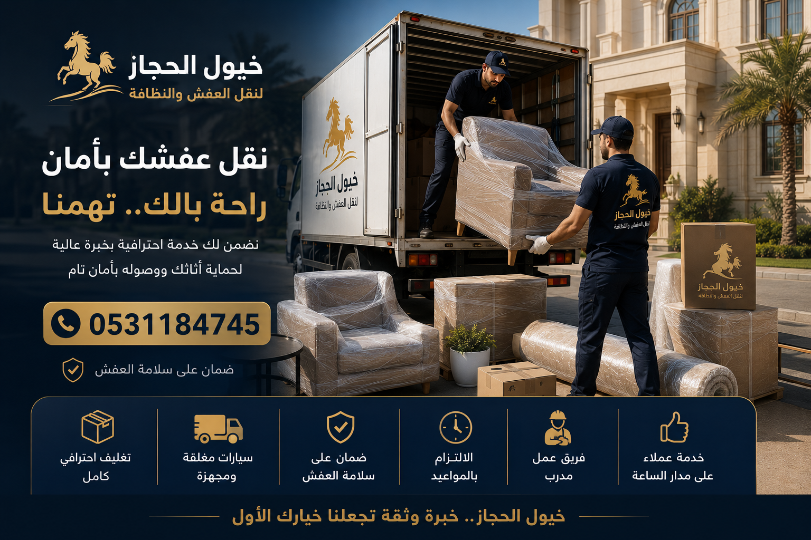
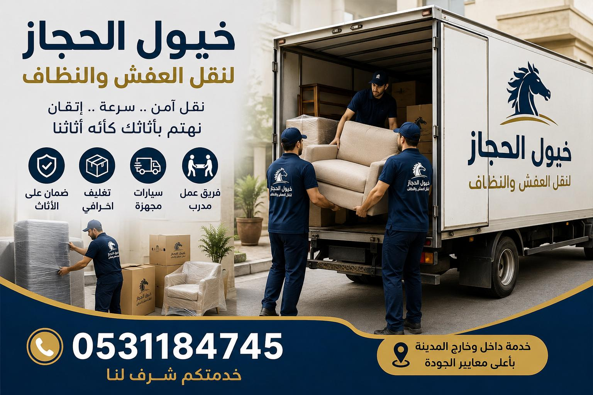
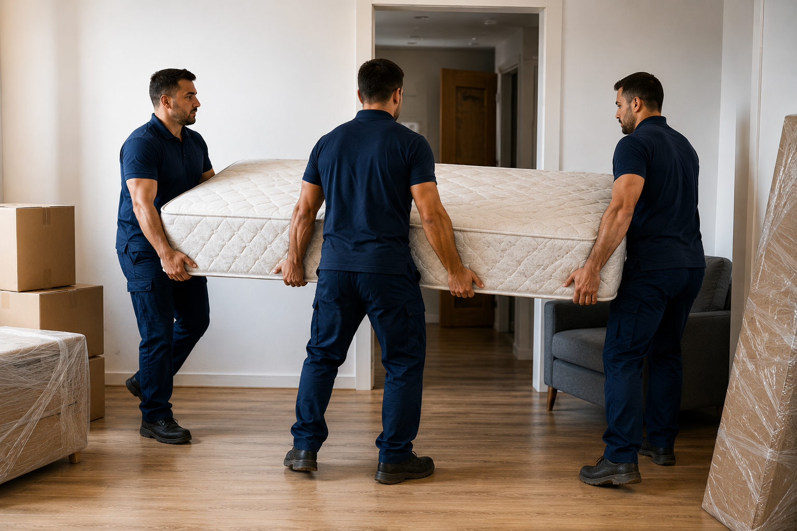
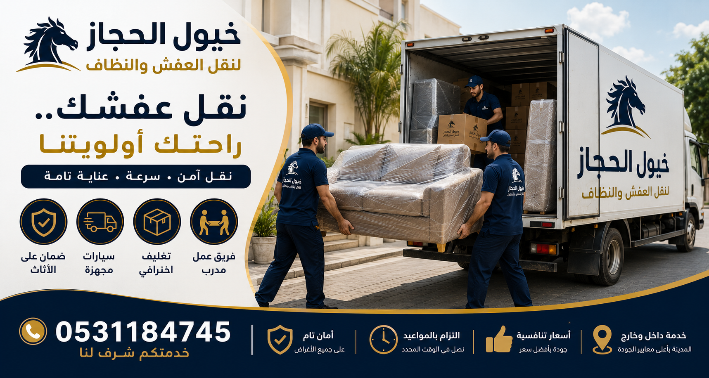

خدمات نقل الأثاث في المملكة العربية السعودية
فريق مدرّب على التغليف والرفع والتفكيك، بمعدات تحمي القطع الخشبية والزجاجية والكهربائية، داخل المدينة أو عبر مدن المملكة.
اطلب عرض سعر عبر واتسابنقل عفش منزلي
إن عملية الانتقال إلى منزل جديد تعد خطوة محورية هامة في حياة كل عائلة، ولكنها في الوقت نفسه قد تكون مصدرًا للقلق والجهد والتوتر. لهذا السبب، تلتزم شركة خيول الحجاز بتقديم خدمة متكاملة ومتخصصة في نقل عفش وشقق وفلل سكنية بمختلف أحجامها. نحن لا نقوم فقط بنقل الصناديق والقطع الخشبية، بل نهتم بكافة الممتلكات المنزلية والأجهزة الكهربائية الحساسة والتحف والزجاجيات الفاخرة لضمان وصولها آمنة وسليمة 100%.
هذه الخدمة مصممة خصيصاً لكل من ينتقل من شقة مستأجرة إلى أخرى، أو للعائلات التي ترغب في الانتقال إلى فيلا جديدة، أو للمقبلين على الزواج لتأسيس عش الزوجية، وكذلك لأصحاب المكاتب والشركات الصغيرة الذين يرغبون في نقل أثاث مكاتبهم دون تعطيل سير العمل. كما نوفر حلولًا لمن لديهم مقتنيات ثمينة يخافون عليها من التلف أثناء النقل التقليدي.
💡 بعد الانتهاء من فك ونقل عفش منزلك، ستحتاج بلا شك إلى تهيئة المكان الجديد؛ ننصحك بالاطلاع على خدمة تنظيف المنازل والشقق لتبدأ حياتك في بيئة نظيفة وصحية.
تستغرق العملية عادةً ما بين 4 إلى 8 ساعات في اليوم نفسه، وذلك يعتمد بشكل أساسي على كمية العفش، والمسافة بين المنزلين، ووجود مصعد كهربائي أو ارتفاع الطوابق.
نعم، نوفر في كثير من الأحيان خدمات نقل سريعة في نفس اليوم بناءً على توفر الشاحنات وفريق العمل، ولكننا ننصح دائماً بالحجز المسبق قبل 24 إلى 48 ساعة لترتيب المواعيد بشكل أفضل.

safe-furniture-loading-moving-truck-service.jpgنقل بين المدن
تتطلب عملية نقل عفش بين المدن خبرة تنظيمية واستعدادات لوجستية عالية تختلف تمامًا عن النقل المحلي داخل المدينة الواحدة. إن طول المسافة وحالة الطرق والظروف المناخية المتغيرة تستدعي اتخاذ تدابير حماية إضافية. في شركة خيول الحجاز، نوفر شاحنات نقل أثاث حديثة مغلقة ومخصصة لقطع آلاف الكيلومترات بأمان كامل، ونعتمد على شبكة طرق سريعة ومحترفين متمرسين في السفر لمسافات طويلة.
يحتاج هذه الخدمة الموظفون الذين تم نقل مقر عملهم من مدينة إلى أخرى (مثل الانتقال من الرياض إلى جدة أو العكس)، والعائلات التي تقرر الانتقال الدائم، والطلاب الذين يدرسون في جامعات بمدن أخرى، بالإضافة إلى معارض الأثاث والشركات التي تود شحن بضائعها وتجهيزاتها المكتبية بين مناطق المملكة بأمان تام وبسعر تنافسي.
💡 الرحلات الطويلة قد تتسبب في تراكم بعض الغبار الخارجي على جوانب الأثاث؛ ننصحك بحجز خدمة تنظيف سجاد ومجالس بالبخار عند وصولك لتستمتع بجلستك الجديدة مباشرة.
نغطي جميع المدن الكبرى والرئيسية في المملكة بما في ذلك الرياض، جدة، مكة المكرمة، المدينة المنورة، الدمام، الأحساء، الطائف، والقصيم وغيرها من المناطق.
يتم احتساب التكلفة بناءً على المسافة المقطوعة بالكيلومترات بين مدينة المغادرة ومدينة الوصول، إلى جانب حجم الشحنة وعدد السيارات المطلوبة لتنفيذ العملية.
فك وتركيب الأثاث
تعتبر عملية فك وتركيب اثاث المنزل من أهم وأخطر المراحل في عملية الانتقال بأكملها. إن الفك الخاطئ أو العشوائي قد يتسبب في تلف مفصلات غرف النوم، أو كسر زوايا طاولات الطعام، أو ضياع البراغي الصغيرة التي يصعب تعويضها. لذا تقدم شركة خيول الحجاز نجارين وفنيين متخصصين ومجهزين بأفضل المعدات والأدوات اليدوية والكهربائية الحديثة للتعامل مع مختلف أنواع الأثاث الخشبي والمعدني بكل يسر وسهولة.
يحتاج هذه الخدمة كل من لديه غرف نوم ايكيا، غرف نوم إيطالية أو كلاسيكية معقدة التركيب، دواليب ملابس كبيرة، طاولات طعام خشبية ضخمة، أو مكاتب عمل تحتاج إلى فك دقيق قبل النقل. كما تفيد هذه الخدمة الأشخاص الذين يودون فك وتركيب المطابخ والمكيفات والستائر دون الحاجة للبحث عن فنيين مستقلين.
💡 بعد تركيب غرف النوم والمطابخ، قد تتناثر بعض الأتربة الناتجة عن عملية التركيب؛ يمكنك حجز خدمة تنظيف مطابخ للحصول على لمعان فوري ونظافة تامة.
نعم، نجارونا مدربون بكفاءة عالية على فك وتركيب أثاث ايكيا والكتالوجات العالمية والمحلية بدقة متناهية ودون إحداث أي ضرر بهيكل الخشب المضغوط.
نعم، نوفر فنيين متخصصين لفك وتركيب المكيفات والأجهزة الأساسية كجزء من باقتنا المتكاملة لتسهيل التجربة على العميل وتوفير وقته.

wrapped-wardrobe-moving-and-packing-service.jpg
professional-furniture-packing-with-protective-wrap.jpgتغليف الأثاث
التغليف هو الحصن المنيع الذي يحمي أثاثك من الصدمات والخدوش والرطوبة أثناء عملية الرفع والتحميل والسفر. إن إهمال التغليف أو استخدام خامات رديئة قد يفسد قطعاً غالية الثمن. في شركة خيول الحجاز، لا نساوم أبداً على الجودة؛ حيث نقوم بـ تغليف اثاث عملائنا باستخدام خامات متنوعة وسميكة تتناسب مع طبيعة كل قطعة، لنضمن لك تجربة نقل خالية تماماً من المتاعب والتلفيات.
يحتاج هذه الخدمة كل من يرغب في نقل تحف فنية نادرة، زجاج ومرايا، شاشات تلفزيون ذكية وحساسة، كنب من الأقمشة الفاتحة التي تتأثر بالغبار والرطوبة، أو أدوات المطبخ الزجاجية والبورسلين سهلة الكسر. التغليف يضمن بقاء أثاثك نظيفاً ومحمياً بالكامل طوال فترة النقل.
💡 بعد الانتهاء من فك التغليف في منزلك الجديد، يمكنك الاستفادة من خدمة تعقيم الحمامات وتلميعها لإزالة آثار لمس الأيدي والحفاظ على بيئة معقمة.
نستخدم رولات الفقاعات الهوائية السميكة (Bubble Wrap)، تليها طبقات من الكرتون المضلع المزدوج، وألواح الفوم لامتصاص الصدمات أثناء النقل في الطرق.
نعم، يمكننا توفير كراتين فارغة ومواد تغليف بجودة عالية وتوصيلها لعملائنا في حال رغبتهم في تعبئة أغراضهم الشخصية بأنفسهم قبل موعد النقل.
تخزين الأثاث
قد تواجه ظروفًا تضطرك إلى إخلاء منزلك الحالي قبل أن يكون منزلك الجديد جاهزًا تمامًا للسكن، أو ربما ترغب في السفر خارج البلاد لفترة طويلة وتبحث عن مكان موثوق لحفظ أثاثك. تقدم شركة خيول الحجاز خدمة تخزين اثاث آمنة في مستودعات مخصصة ومحمية، تم تصميمها وفقاً لأعلى معايير السلامة والأمان لتضمن بقاء أثاثك في بيئة نظيفة ومراقبة على مدار الساعة.
تفيد هذه الخدمة المغتربين والمسافرين لفترات طويلة، والعائلات التي تقوم بعمل ترميمات وتجديدات شاملة لمنازلها وتود حماية العفش من الدهانات والغبار، والأشخاص الذين ينتظرون استلام وتجهيز شققهم الجديدة، والشركات التي تحتاج لتخزين بضائعها أو أثاثها الفائض بشكل مؤقت أو مستمر.
💡 بعد استعادة أثاثك من التخزين وإعادة تركيبه، نقترح عليك طلب خدمة تنظيف شقق ومنازل لتنظيف الغرف من الأتربة الناتجة عن الحركة والترتيب.
بالتأكيد، نقوم برش دوري للمستودعات لمكافحة الآفات والحشرات، ونحرص على تهوية جيدة ومستمرة لمنع تشكل الرطوبة التي قد تؤثر على الخشب والكنب.
نوفر فترات تخزين مرنة للغاية تبدأ من أسبوع واحد وتصل إلى عدة أشهر أو سنوات، مع تقديم خصومات وعروض مميزة للمدد الطويلة.

furniture-loading-on-lifting-hoist-moving-company.jpgنصائح خيول الحجاز
نشارك معك بعض الخطوات البسيطة والعملية التي يمكنك القيام بها لتسهيل عملية نقل الأثاث وتوفير الوقت والجهد على الجميع:
تخلص من الأغراض التالفة أو غير المستخدمة قبل النقل، فذلك يقلل من حجم الشحنة وتكلفتها ويسهل الترتيب لاحقاً.
احرص على جمع المجوهرات والذهب والوثائق الرسمية والأجهزة الشخصية في حقيبة يد خاصة تنقلها بسيارتك الشخصية.
افصل الثلاجة والمجمد قبل 12 ساعة على الأقل من عملية النقل، وتأكد من جفافهما تماماً لتجنب تسرب المياه أثناء السير.
احرص على حجز خدمة تنظيف الشقة الجديدة قبل موعد النقل بيوم لتنزيل الأثاث في بيئة نظيفة مباشرة.
معرض الأعمال

professional-furniture-movers-carrying-refrigerator-saudi-arabia.jpg
three-workers-carrying-mattress.jpg
professional-furniture-moving-team-safe-transport.jpg